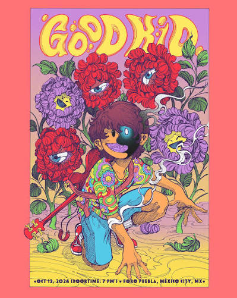
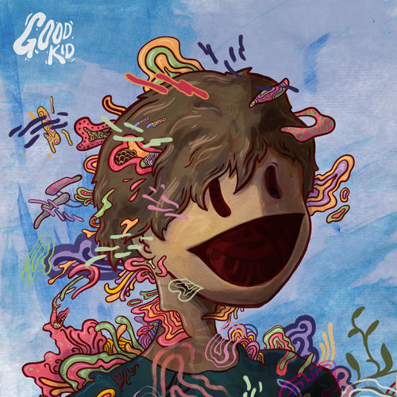
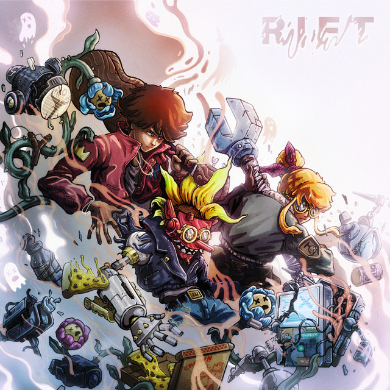
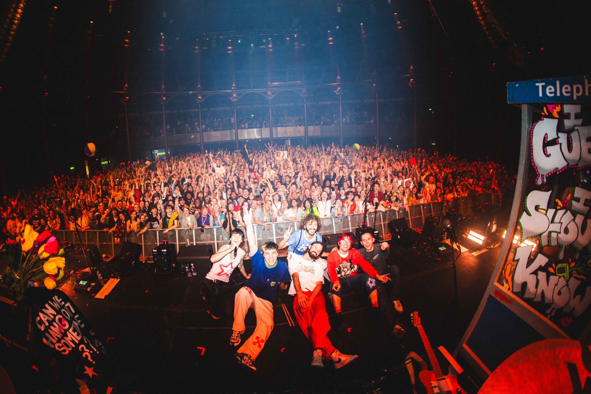

Sobre

História
A Good Kid é uma banda canadense de indie rock formada em Toronto, Ontário, em 2015.
A origem da banda é um dos aspectos mais curiosos: os integrantes se conheceram na University of Toronto e tinham em comum o interesse por computação, videogames e música. Quase todos estudavam Ciência da Computação; David Wood, inicialmente ligado ao cinema, acabou entrando também no mundo da computação.
A formação atual é:
- Nick Frost - vocalista
- David Wood - guitarra
- Jacob Tsafatinos — guitarra
- Michael Kozakov — baixo
- Jon Kereliuk — bateria
A banda começou como um hobby, sem grandes expectativas comerciais. O próprio Nick Frosst disse que eles queriam simplesmente fazer músicas de que gostassem.
A primeira música da banda foi "Nomu", lançada em 13 de outubro de 2015.
Ela começou a chamar atenção principalmente através do Reddit, algo que acabou sendo importante para o crescimento inicial da banda. E "Nomu" teve uma consequência muito maior do que eles imaginavam: deu origem ao personagem que se tornaria o mascote da banda, o Nomu Kid.

Boom

Por volta de 2020–2021, Good Kid começou a ganhar enorme exposição através da comunidade gamer, especialmente em streams de Fortnite.
As músicas começaram a aparecer em vídeos, streams e montagens feitas por jogadores.
Em vez de tentar impedir o uso das músicas por meio de reivindicações de copyright, a banda decidiu permitir que sua música continuasse sendo utilizada pelos criadores. Isso ajudou a música deles a circular muito mais pela internet.
E essa relação com videogames acabou se tornando parte da identidade da Good Kid.
Universo
Good Kid não ficou restrita à música.
O personagem Nomu Kid, criado pelo artista Gabriel Altrows, começou como uma simples arte para a música "Nomu". Com o tempo, a banda transformou aquela imagem em parte de um universo narrativo muito maior.
Hoje existem:
- Personagens;
- Histórias;
- Animações;
- Videoclipes;
- Jogos;
- Quadrinhos/referência;
- Discord;
- Materiais produzidos pelos fãs.

Características
A Good Kid é classificada principalmente como indie rock, mas seu som mistura várias influências.
O próprio Bandcamp da banda atualmente classifica o álbum como:
- Indie rock;
- Indie pop;
- Alternative rock;
- J-rock.
Guitarras
Provavelmente o elemento mais reconhecivel da banda, elas são:
- Melódicas;
- Rápidas;
- Cheis de riffs;
- Relativamente "limpas";
- frequentemente com duas guitarras trabalhando juntas. Existe bastante influência de bandas como The Strokes, Two Door Cinema Club, Bloc Party e KANA-BOON
Bateria
A bateria geralmente mantém as músicas em movimento. Mesmo quando a música não é particularmente pesada, existe uma sensação de velocidade + urgência + diversão.
Vocal
Nick Frosst utiliza um vocal predominantemente melódico e relativamente leve, em vez daquele vocal agressivo típico do punk ou do hardcore.
Isso permite que as músicas tenham energia sem necessariamente parecerem pesadas.

Can We Hang Out Sometime?
Depois de anos lançando principalmente singles e EPs, a banda finalmente lançou seu primeiro álbum completo: Can We Hang Out Sometime? em 3 de abril de 2026. As musicas do álbum são:
- Rift
- Eastside
- Coffe
- Cicada
- Tea Leaves
- Alone With Me
- Ghost Keeper
- Tornado
- Wall
- Can We Hang Out Sometime?
O álbum foi produzido por John Congleton, e todas as músicas foram creditadas à própria Good Kid.
Escute ao album: